04 ASM — 演算法狀態機與定序器／資料路徑
流程圖 → ASM 圖 → 定序器與資料路徑，主要範例是位移相加乘法器。原始投影片 51 張，估計閱讀 70 分鐘。
學習目標
- 說明為什麼同一行
assign P = A * B;可以合成出面積與速度完全不同的電路。 - 讀懂 6 位元平行乘法器的單元電路與 6×6 陣列結構。
- 用
generate與genvar寫出參數化的結構複製，並分辨for在initial／generate／always三處的不同意義。 - 完整走過 ASM 的四步設計流程：虛擬碼 → 流程圖 → ASM 圖 → 硬體／HDL。
- 套用流程圖轉 ASM 圖的規則，特別是寫後讀 (WR) 相依必須拆成兩個狀態與 dummy 狀態的用途。
- 把 ASM 元件對應到一熱碼定序器與多工器堆疊式資料路徑。
- 說出 ASM 設計法的代價：面積開銷大、效能較低。
4.1 本章大綱
投影片 p.1–2
本章封面日期 2022/10/06，是 Lec. 04「ASM, Serial Multipliers」。大綱四項：
- RTL or Behavioral（RTL 還是行為模型）
- Two Major Phases of HDL（HDL 的兩大階段）
- Applicative Tools Related to HDL（相關的應用工具）
- ASM-Based Synthesis using an Example（以範例貫穿的 ASM 合成法）
第四項是本章主體，從 §4.15 一路做到 §4.26，用同一個「位移相加乘法器」範例走完整個設計流程。前面 §4.2–§4.14 是鋪陳與工具介紹。
4.2 RTL 還是行為模型？二進位與格雷計數器
投影片 p.3
投影片的提問是 Which is Better – RTL or Behavior，副標 Rethink using Binary Counter and Gray Counter，並在圖上寫著 Regular structure or regular behavior?（規律的結構，還是規律的行為？）
module Binary(Clk, Q);
input Clk;
output [n-1:0] Q;
wire [n-1:0] Qb;
always@(posedge Clk)
Q=Q+1;
endmodulemodule Gray(Clk, Q);
input Clk;
output [n-1:0] Q;
wire [n-1:0] Qb;
binary_counter (Clk, Qb);
xor_array (Q, Qb);
endmodule左邊用一行行為描述 Q=Q+1；右邊改成「二進位計數器 + XOR 陣列」的結構寫法。圖上畫出 Q5 Q4 Q3 Q2 Q1 Q0 暫存器，下面兩排各五個 XOR 閘，把相鄰兩位元相互 XOR — 這就是二進位轉格雷碼的 xor_array，並標著 Low Power Channel。
格雷碼的特性是相鄰數值只差一個位元，所以計數時翻轉的位元數最少，功耗較低 — 這就是 Low Power Channel 的意思。轉換式是 G[i] = B[i] ^ B[i+1]。
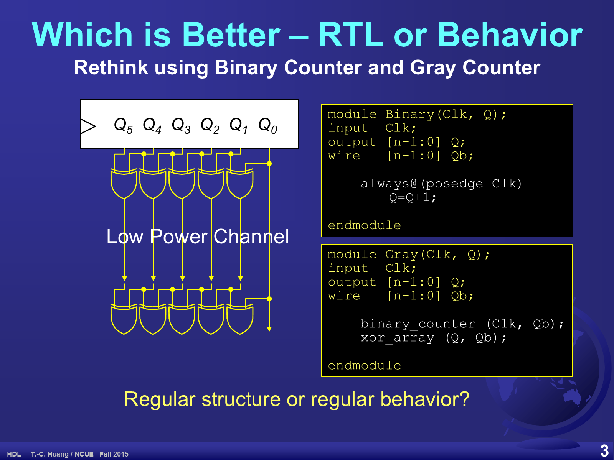
4.3 HDL 的兩大階段
投影片 p.4
| 階段 | 內容 |
|---|---|
| Simulation 模擬 | Usually simulated along time axis (initial)（沿時間軸模擬）With stimuli（需要刺激訊號） |
| Synthesis 合成 | Continuously exists（持續存在）：Gate-Level (Structural View)、RTL ( assign L = f(R); )Always Procedural (Behavioral Model)（ always 程序式／行為模型） |
這一頁與第 03 章 §3.14 是同一個觀念的濃縮：initial 屬於模擬；assign 與 always 才會變成電路。
4.4 循序電路的四種看法
投影片 p.5
- Huffman Model: Combinational Circuits with a set of DFFs（組合邏輯加上一組 D 型正反器）
- Combinational Network is a DAG (Directed Acyclic Graph)（組合網路是有向無環圖）
- 1-Cycle FSM with additional Reset cycle.（單一週期的 FSM，外加一個重置週期）
- Can be expanded to an iterative logic array (ILA) that is a combinational circuit, i.e. trivial 0-cycle FSM.（可以展開成迭代邏輯陣列 ILA，它就是一個組合電路，也就是零週期的 FSM）
- Long critical paths can be spitted by inserted DFFs.（長的關鍵路徑可以插入正反器來切開）
原文 spitted 應為 split。照原文保留。
圖上四朵雲由左至右，說明同一個循序電路的四種看法：
| # | 標籤 | 意思 |
|---|---|---|
| 1 | Seq. Ckt | 一般的循序電路 |
| 2 | Datapath + ASM | 拆成資料路徑與控制用的 ASM（本章主題） |
| 3 | Huffman Model / Pure FSM | 純粹的有限狀態機（第 05 章主題） |
| 4 | Critical-Path Split | 插入正反器切開關鍵路徑 |
下方另一排雲與暫存器交錯，標著 Pipelined Datapath（管線化資料路徑）與 Combinational Circuits，中間的箭頭標 ILA — 代表把 FSM 完全展開成組合電路。
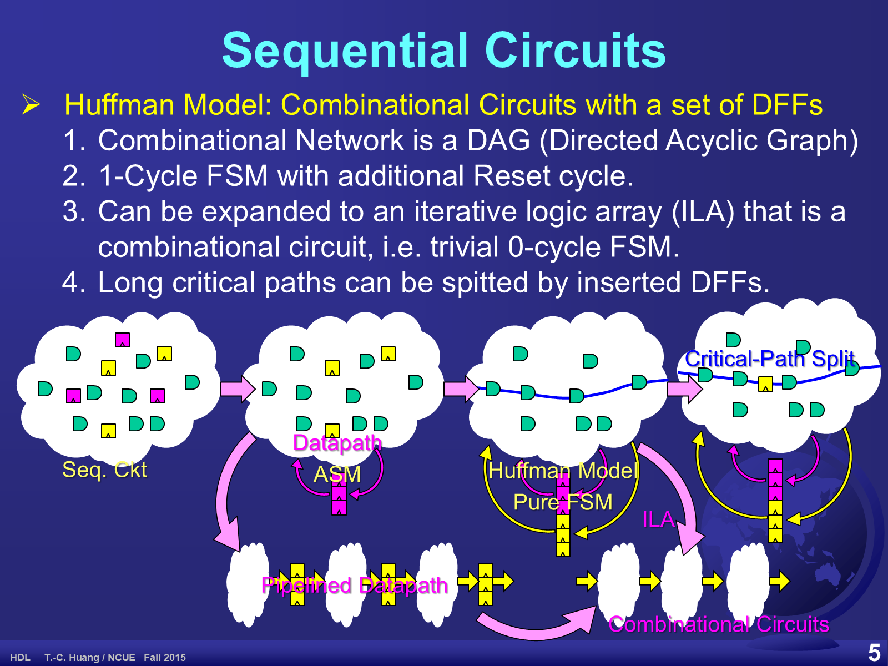
4.5 從加法器到減法器
投影片 p.6
- Boolean Function Based Design: Too Complex（直接用布林函數設計太複雜）
- Half-Subtractor→Full-Subtractor→n-bit Subtractor（半減器 → 全減器 → n 位元減器）
- Parallel Design（平行設計）
- Modified from Adder（由加法器改造）：
S = A + B if Sub==0S =A - B = A + (-B) = A + (~B+1) if Sub==1D = S = A + (Sub ? ~B : B) + Sub
最後那一行是關鍵技巧：用一個 Sub 控制訊號同時決定「B 要不要反相」與「進位要不要加 1」，一組電路就能做加法與減法。
module Sub(A, B, Bi, D, Bo);
input A[n-1:0], B[n-1:0], Bi;
output D[n-1:0], Bo;
reg D[n-1:0], Bo;
assign {Bo, Bi}=A-B-Bi;
endmodule這段程式有兩處問題：埠宣告寫成 A[n-1:0]（Verilog 的正確寫法是 [n-1:0] A）；assign 的左側把輸入 Bi 也放進串接 {Bo, Bi}，而輸出 D 從未被指定。照原文保留。
4.6 平行乘法器：長乘法、單元電路與 6×6 陣列
投影片 p.7–9
長乘法的算法（p.7）
投影片並排十進位與二進位兩個長乘法，說明乘法就是「部分積相加」。
2 3 4
X ) 1 2 3
---------
7 0 2
4 6 8
2 3 4
---------
2 8 7 8 2 1 0 1 1 = B
X ) 1 1 0 1 = A
-----------
1 → 1 0 1 1
0 → 0 0 0 0
1 → 1 0 1 1
1 → 1 0 1 1
-----------
1 0 0 0 1 1 1 1圖上另有八條淡紫色垂直線標出乘積的各個位欄，綠色斜箭頭標出對角的進位／部分積流向，下方標題為 Product P=BxA。
關鍵觀察：每一列部分積要嘛是 B 本身、要嘛是全零，取決於 A 的那一位是 1 還是 0 — 所以一個 AND 閘就夠了。
乘法器單元 (p.8)
module MULij(Ai, Bj, Ci, Co, Pi, Po);
input Ai, Bj, Ci;
output Co, Pij;
and (AB, Ai, Bj);
FullAdder (Pi, Ci, AB, Co, Po);
endmodule埠列宣告的是 Pi, Po，但 output 卻寫 Co, Pij，三個名稱並不一致。照原文保留。
單元畫成一個白色方塊，上面跑著四種訊號：
| 訊號 | 方向 | 作用 |
|---|---|---|
Ai → Pij | 左上 → 右下（洋紅對角線） | 乘數位元穿過單元 |
Bj | 由上往下（綠色垂直線） | 被乘數位元 |
| 部分和 | 由左往右（白色水平箭頭） | 累加值穿過單元 |
Ci(j-1) → Cij | 由右往左（深紅水平箭頭） | 漣波進位 |
單元內部就是一個 AND 閘（算 Ai & Bj）接一個全加器（標 +）。
6×6 陣列（p.9）
把上面那顆單元排成 6 列 × 6 行就是完整的 6 位元平行乘法器：
- 左側標
B[0]–B[5]（列，j），上方標A[0]–A[5]（行，i）。 - 第 0 列只有 AND 閘，沒有加法器 — 因為還沒有東西要累加。
- 第 1–5 列每格都是 AND 閘加一個
+全加器；黃色水平箭頭由右往左傳遞漣波進位，每列最左的進位再向下彎進下一列最左的單元。 - 洋紅色對角線把部分和往左下傳；最右欄與最左欄的單元是邊界單元（半乘法器單元），中間才是完整單元。
- 乘積從右緣往下輸出
P[0]–P[5]，以及沿底部輸出P[5]–P[11]。 - 左下角另標一條對角軸
k=i-j。
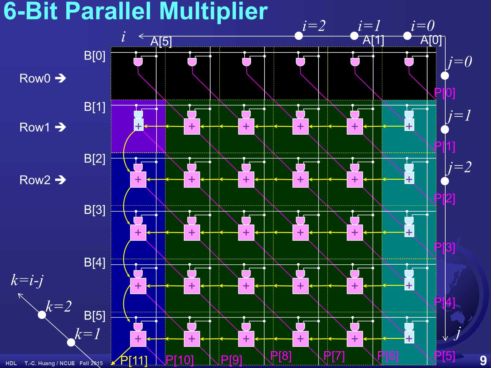
這種陣列乘法器是純組合電路：面積是 O(N²)，但一個時脈週期就算完。§4.28 會把它和循序乘法器放在同一張面積／時間取捨圖上比較。
4.7 用 C 程式產生 Verilog 實體列表
投影片 p.10
標題是 Coding by C2V in V95。Verilog-1995 沒有 generate，要寫 36 個單元的實體化就只能一行一行打 — 或者寫一支 C 程式把它印出來。
#include <stdio.h>
#include <stdlib.h>
main()
{
int i, j, N=6;
for(i=0; i<N; i++) {
for(j=0; j<N; j++) {
printf("MCell M%d(A[%d], B[%d], ", i*N+j, i, j);
if(j==0) printf("0, "); else printf("C[%d], ", i*N+j-1);
printf("C[%d], ", i*N+j);
if(i==0) printf("0, ");
else if(j==N-1) printf("C[%d], ", (i-1)*N+j);
else printf("S[%d], ", (i-1)*N+j+1);
printf("S[%d]);\n", i*N+j);
}
}
} MCell M0(A[0], B[0], 0, C[0], 0, S[0]);
MCell M1(A[0], B[1], C[0], C[1], 0, S[1]);
MCell M2(A[0], B[2], C[1], C[2], 0, S[2]);
MCell M3(A[0], B[3], C[2], C[3], 0, S[3]);
MCell M4(A[0], B[4], C[3], C[4], 0, S[4]);
MCell M5(A[0], B[5], C[4], C[5], 0, S[5]);
MCell M6(A[1], B[0], 0, C[6], S[1], S[6]);
MCell M7(A[1], B[1], C[6], C[7], S[2], S[7]);
MCell M8(A[1], B[2], C[7], C[8], S[3], S[8]);
MCell M9(A[1], B[3], C[8], C[9], S[4], S[9]);
MCell M10(A[1], B[4], C[9], C[10], S[5], S[10]);
MCell M11(A[1], B[5], C[10], C[11], C[5], S[11]);
MCell M12(A[2], B[0], 0, C[12], S[7], S[12]);
MCell M13(A[2], B[1], C[12], C[13], S[8], S[13]);
MCell M14(A[2], B[2], C[13], C[14], S[9], S[14]);
MCell M15(A[2], B[3], C[14], C[15], S[10], S[15]);
MCell M16(A[2], B[4], C[15], C[16], S[11], S[16]);
MCell M17(A[2], B[5], C[16], C[17], C[11], S[17]);
MCell M18(A[3], B[0], 0, C[18], S[13], S[18]);
MCell M19(A[3], B[1], C[18], C[19], S[14], S[19]);
MCell M20(A[3], B[2], C[19], C[20], S[15], S[20]);
MCell M21(A[3], B[3], C[20], C[21], S[16], S[21]);
MCell M22(A[3], B[4], C[21], C[22], S[17], S[22]);
MCell M23(A[3], B[5], C[22], C[23], C[17], S[23]);
MCell M24(A[4], B[0], 0, C[24], S[19], S[24]);
MCell M25(A[4], B[1], C[24], C[25], S[20], S[25]);
MCell M26(A[4], B[2], C[25], C[26], S[21], S[26]);
MCell M27(A[4], B[3], C[26], C[27], S[22], S[27]);
MCell M28(A[4], B[4], C[27], C[28], S[23], S[28]);
MCell M29(A[4], B[5], C[28], C[29], C[23], S[29]);
MCell M30(A[5], B[0], 0, C[30], S[25], S[30]);
MCell M31(A[5], B[1], C[30], C[31], S[26], S[31]);
MCell M32(A[5], B[2], C[31], C[32], S[27], S[32]);
MCell M33(A[5], B[3], C[32], C[33], S[28], S[33]);
MCell M34(A[5], B[4], C[33], C[34], S[29], S[34]);
MCell M35(A[5], B[5], C[34], C[35], C[29], S[35]);讀法：j==0 時進位輸入給常數 0（每列最右端）；i==0 時部分和輸入給 0（第一列沒有東西可累加，呼應 §4.6 的觀察）；j==N-1 時取的是上一列的進位而不是部分和（最左邊界）。
這種「用程式產生 HDL」的做法在 V2K 加入 generate 之後大致被取代（見 §4.11），但在產生測試向量、記憶體初始內容或超大規則陣列時仍然常用。
4.8 IEEE 1364-2001 (V2K) 的新功能
投影片 p.11
投影片列出 17 項增強（Enhancement in IEEE 1364-2001 V2K），照錄：
- Design management—Verilog configurations
- Scalable models—Verilog generate
- Constant functions
- Indexed vector part selects
- Multidimensional arrays (
reg [7:0] a[1:4][0:255];) - Bit and part selects within arrays
- Signed arithmetic extensions (eg.
reg signed [15:0] x; >>>) - Power operator
**(xor^) - Re-entrant tasks and recursive functions
- Combinational logic sensitivity token (
always@*) - Comma-separated sensitivity lists
- Automatic width extension beyond 32 bits
- Enhanced file I/O
- In-line parameter passing by name
- Combined port and data type declarations
- ANSI-style input and output declarations
regdeclaration initial assignments
其中第 2 項 generate 直接取代了 §4.7 的 C 產生器；第 10 項 always@* 讓組合邏輯不必手動列敏感度；第 16 項 ANSI 式埠宣告就是第 03 章 §3.7 的那種寫法。
4.9 八種 Block 與「Block」的兩種意思
投影片 p.12–13
p.12 的表格與第 03 章 §3.18 完全相同（同一張表在兩章都出現）：
| Block | Outlook | Property | for-loop | index |
|---|---|---|---|---|
| statements | begin [:name] / end | grouping | ||
| module | module #(para) ID (ports); / endmodule | parallel | ||
| always | always@(events) statements; | procedural | concurrent | integer |
| initial | initial statements; | serial | sequential | Integer |
| task | task ID; / endtask | procedural | sequential | integer |
| function | function ID; / endfunction | procedural | sequential | sequential |
| generate | generate / endgenerate | by time 0 | genvar | |
| specify | specify / endspecify |
「Block」的兩種意思（p.13）
- A rectangle region（名詞：一塊矩形區域）
- Hierarchical blocks（階層式區塊）
- Specific blocks（特定區塊）：
module / endmodule、always、generate、Initial、specify / endspecify、function / endfunction、Task / endtask
- To block is to stop something moving（動詞：阻擋）
- Blocking Assignment：In “
x = y; z = x;” write(x) will block read(x). - Non-blocking Assignment：In “
x <= y; z <= x;” write(x) won’t block read(x).
- Blocking Assignment：In “
這組對照把第 03 章 §3.21／§3.23 的阻塞／非阻塞講得更直白：「阻塞」就是「寫入 x 會擋住後面對 x 的讀取」。
4.10 Verilog 的 for：時間、空間與並行
投影片 p.14
這是全章最重要的語法觀念之一。同一個 for 寫在不同的 block 裡，意思完全不同。投影片用一組 3D 的 Space（往上）與 Time（往右下）座標軸，把三段程式各放在對應的平面上。
integer i;
initial begin
for(i=1; i<10; i=i+1) begin
X = i[7:0];
#10;
end
$stop;
end這個 for 在模擬時間上重複執行 9 次，每次間隔 10 個時間單位 — 用來產生測試刺激。
genvar i;
(generate)
for(i=1; i<10; i=i+1) begin:NAME
MODULE G1(X[i], Y[i+1]);
assign OUT[i] = IN[i-1]+A;
end
(endgenerate)這個 for 在編譯時展開，產生 9 份硬體複製 — 迴圈結束後電路裡真的有 9 個 MODULE 實體。索引變數必須是 genvar。
integer i;
always@(posedge Clk) begin
for(i=1; i<10; i=i+1) begin
R[i] <= R[i-1];
end
R[9] <= R[0];
end
這個 for 在一個時脈週期內全部展開並同時生效（因為用的是非阻塞指定），結果是一個 10 級的環形移位暫存器 — 不是跑 9 個週期。
| 寫在哪 | 索引型別 | 展開在 | 結果 |
|---|---|---|---|
initial | integer | 模擬時間 | 依序執行，不是硬體 |
generate | genvar | 編譯時（空間） | 複製出多份硬體 |
always | integer | 一個時脈內（並行） | 同時生效的多條指定 |
投影片 XML 中 genvar i; 與 always@(posedge Clk) 的空白在部分文字段落遺失（顯示為 genvari;、always@(posedgeClk)），上面照畫面的正確形式呈現。
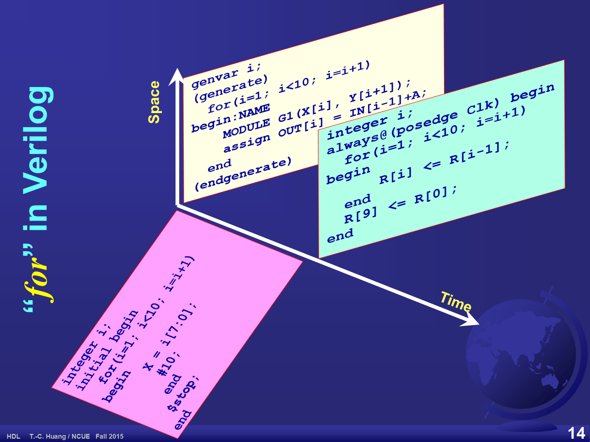
4.11 用 generate 寫參數化乘法器
投影片 p.15–16
有了 generate，§4.7 那支 C 產生器就可以直接寫進 Verilog 裡。
1 module MulP(A, B, P);
2 parameter N;
3 input [N-1:0] A, B;
4 output [2*N-1:0] P;
5 wire C[0:N-1][1:N-1]; // Carry Out at Column i, Row j
6 wire S[0:N-1][0:N-1]; // Sum
7 genvar i, j; // (1)
8 generate // (2)
9 for(i=0; i<N; i=i+1) begin: Top // (3)
10 and U(S[i][0], A[i], B[0]);
11 end
12 for(j=1; j<N; j=j+1) begin: Right
13 HM R(A[0], B[j], S[1][j-1], C[0][j], S[0][j]);
14 end
15 for(j=1; j<N; j=j+1) begin: ROW
16 for(i=1; i<N-1; i=i+1) begin: COL
17 FM M(A[i], B[j], C[i-1][j], S[i+1][j-1], C[i][j], S[i][j]);
18 end
19 end
20 for(j=2; j<N; j=j+1) begin: Left
21 FM M(A[N-1], B[j], C[N-2][j], C[N-1][j-1], C[N-1][j], S[N-1][j]);
22 end
23
24 for(j=0; j<N; j=j+1) begin: Linka
25 assign P[j] = S[0][j];
26 end
27 for(i=1; i<N; i=i+1) begin: Linkb
28 assign P[N+i-1] = S[i][N-1];
29 end
30 endgenerate // (4)
31 HM UL(A[N-1], B[1], C[N-2][1], C[N-1][1], S[N-1][1]);
32 assign P[2*N-1] = C[N-1][N-1];
33 endmodule這段程式在投影片中只是一張圖片（EMF），上面的內容是從畫面轉錄而來，不是從 XML 逐字取得。若要當成可編譯的程式使用，請再對照原始投影片核對一次。
結構對應到 §4.6 的陣列：Top 迴圈產生第 0 列的 AND 閘；Right 產生最右邊界的半乘法器單元 HM；ROW／COL 雙層迴圈產生中間的完整單元 FM；Left 產生最左邊界；Linka／Linkb 把乘積接出去。
parameter b = 6;
reg [b-1:0] A, B;
wire [2*b-1:0] P;
MulP #(b) U1(A, B, P); genvar i, j;
for(i=0; i<N; i=i+1) begin : Row
for(j=0; j<N; j=j+1) begin : Col
MCell Cell( A[i], B[j], Ci[i][j], Co[i][j], Si[i][j], So[i][j]);
end
end
endmodule把 §4.7 的 36 行手工列表換成這六行 — 而且 N 可以是任意值。
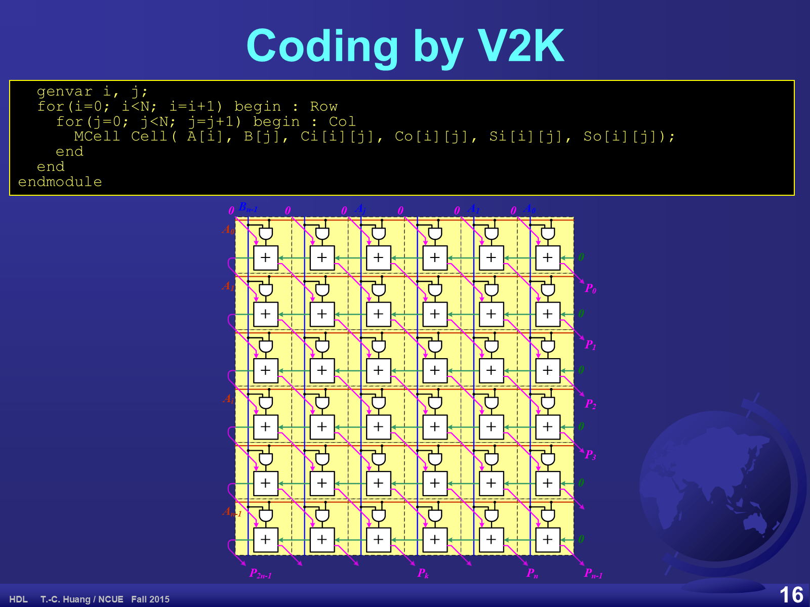
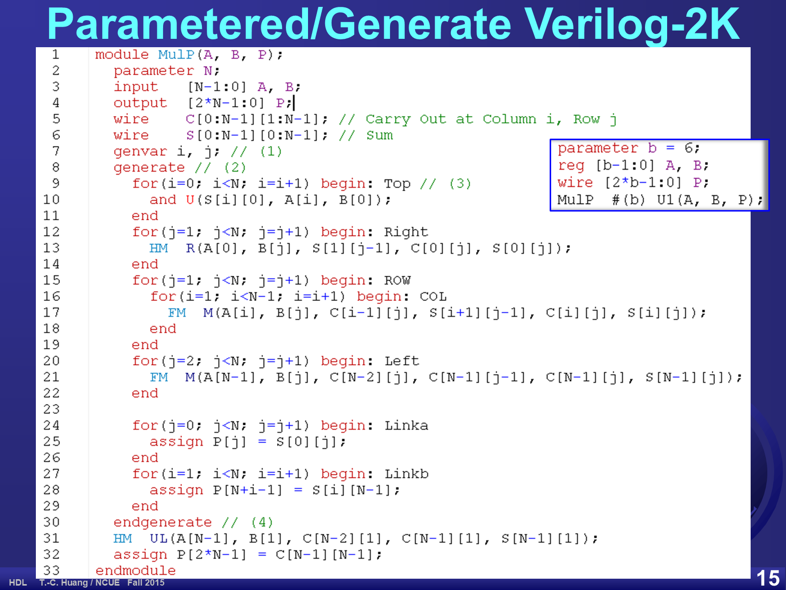
4.12 大量資料的驗證
投影片 p.17
標題 Big-Data Verification。8 位元乘 8 位元共 216 = 65536 組輸入，用雙層 for 全部跑一遍並與 i*j 比對 — 這就是「窮舉驗證」。
`timescale 1ns/10ps
module Test_MUL;
parameter N = 8;
reg [N-1:0] A, B;
wire [2*N-1:0] P;
MUL U1(A, B, P);
integer i, j, ok;
initial begin
$monitor($time, ",", A, ",", B, ",", P);
ok=1;
for(i=0; i < 1<<N ; i=i+1)
for(j=0; j < 1<<N ; j=j+1)
begin
A=i; B=j;
#10;
if(P != i*j) ok=0;
end
$display("Varification: %s.", ok ? "Ok" : "Failed");
$stop;
end
endmoduleVSIM 3> run
# 0, 0, 0, 0
:
:
# 655340,255,254,64770
# 655350,255,255,65025
# Varification: Ok.
# Break in Module Test_MUL at D:/work/MulArray/Test_MUL.v line 20
VSIM 4> |原文把 Verification 拼成 Varification（程式與輸出都是）。照原文保留。
注意最後時間是 655350 ns：65536 組 × 10 ns。用一個 ok 旗標累積結果、最後一次印出，比每組都印快得多 — 這正是第 01 章 Lab01 要求的 Using a Flag, say, OK = 1 手法。
4.13 佈局視圖
投影片 p.18
標題 Layout View: 6-Bit Parallel Multiplier。整頁是一張實際的 IC 佈局截圖：方形晶粒外圈一整環打線接墊，四周是密集的標準單元列，中央是繞線通道與長網線，而正中央那塊規律的亮綠／黃色區塊就是乘法器陣列核心。
教學重點：§4.6 畫的那個規律 6×6 陣列，在真實佈局上看得出來是一塊明顯規律的方塊 — 規律的結構會留下規律的實體痕跡。
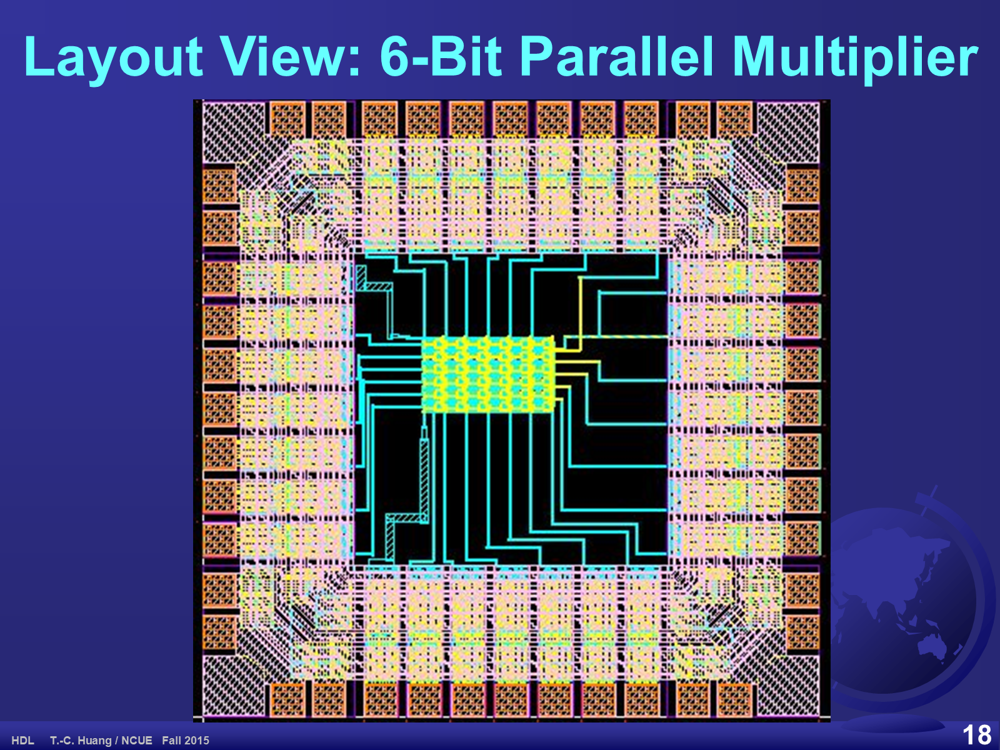
4.14 N 位元移位器與移位暫存器
投影片 p.19
這一頁為後面的乘法器資料路徑準備零件。圖分三層：
- Constant Shifter（桶式移位器）：三排各八個 2 對 1 多工器。第一排由
Shift_Left1控制、第二排Shift_Left2、第三排Shift_Left3。每排的1腳分別往左取 1／2／4 個位置，右端空出的輸入接地。圖上用粗黃線標出一條路徑，示範 1+0+4 = 位移 5 位。 - 平行四邊形抽象符號：把整個移位器縮成一個符號，八條對角箭頭往左出去，右端一個接地三角形。
- Shift Register（移位暫存器）：平行四邊形符號接到八個暫存器格，輸出再繞回輸入 — 形成循環移位。
為什麼用「1、2、4」三排？因為 1+2+4 可以組出 0 到 7 的任意位移量，只要三排多工器就夠（log₂N 排），這就是桶式移位器 (barrel shifter) 的標準做法。§4.24 的資料路徑會用到它的右移版本。
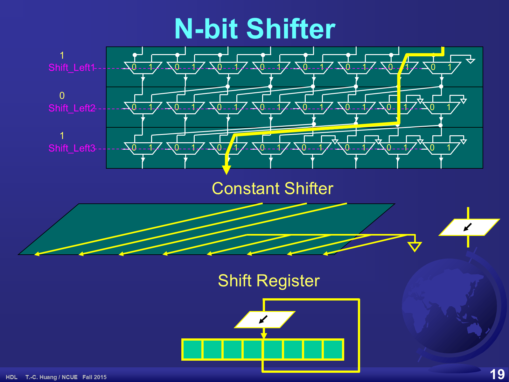
4.15 演算法狀態機 (ASM) 與四步設計流程
投影片 p.20
這一頁是全章的方法宣言。ASM 的定義與代價（照錄）：
- A special design style of general finite state machines.（一般有限狀態機的一種特殊設計風格。）
- It can be designed by mapping from the flow-chart.（可以由流程圖對應而來。）
- It can be synthesized manually.（可以手工合成。）
- High area overhead and low performance due multiplexer stack.（因為多工器堆疊，面積開銷高、效能低。）
投影片自己就點出 ASM 的代價：多工器堆疊會造成面積大、速度慢。§4.24 會看到那個堆疊長什麼樣子。
四個步驟
- Describe your system in pseudo code;（用虛擬碼描述系統）→ §4.16
- Draw the flow-chart;（畫流程圖）→ §4.17、§4.19
- Map the flow-chart to ASM chart;（把流程圖對應成 ASM 圖）→ §4.18、§4.21
- Map the ASM chart to the HDL or circuit.（把 ASM 圖對應成 HDL 或電路）→ §4.22–§4.26
4.16 步驟 1：虛擬碼
投影片 p.21
- A high-level, almost-executable description（高階、幾乎可執行的描述）
- Used for leader’s instruction, explanation of algorithms, etc.（用於交辦工作、說明演算法等）
- Pascal-like or C-like codes with some comprehensive English is preferable.（建議用類 Pascal 或類 C 的寫法，混一些易懂的英文。）
投影片的範例是測試圖樣產生中的控制合理化演算法 (control justification)：
1 C-alg()
2 {
3 C-frontier=φ;
4 For each FF, f, propagate-C-frontier(f);
5 While(C-frontier≠ φ){
6 Get a gate g from C-frontier that has the maximum fanout;
7 J-frontier=φ;
8 c=controlling value of g;
9 Set control(g) = FAILED;
10 Repeat
11 Select an input of gate g, l, with a don't-care X;
12 If Justify(l,c) then control(g) = SUCCESS;
13 Until control(g)=SUCCESS or no input has an X value;
14 If control(g)=FAILED then propagate-C-frontier(g);
15 }
16 Return values at PI's as the control pattern;
17 }
18 propagate-C-frontier(g)
19 {
20 For each non-FF fanout gate, h, of g
21 if h ∈{NOT, XOR, XNOR} or h does not have a don't care
22 then propagate-C-frontier(h);
22 else put h into C-frontier;
23 }原圖的行號有誤：第 22 行出現兩次。另外這段內容只存在於投影片的圖片物件中，上面是從畫面轉錄而來。
注意這段虛擬碼的風格：用了數學符號 φ、≠、∈，也用了英文句子 For each FF, f, ... — 正是投影片建議的「類 C 加易懂英文」。
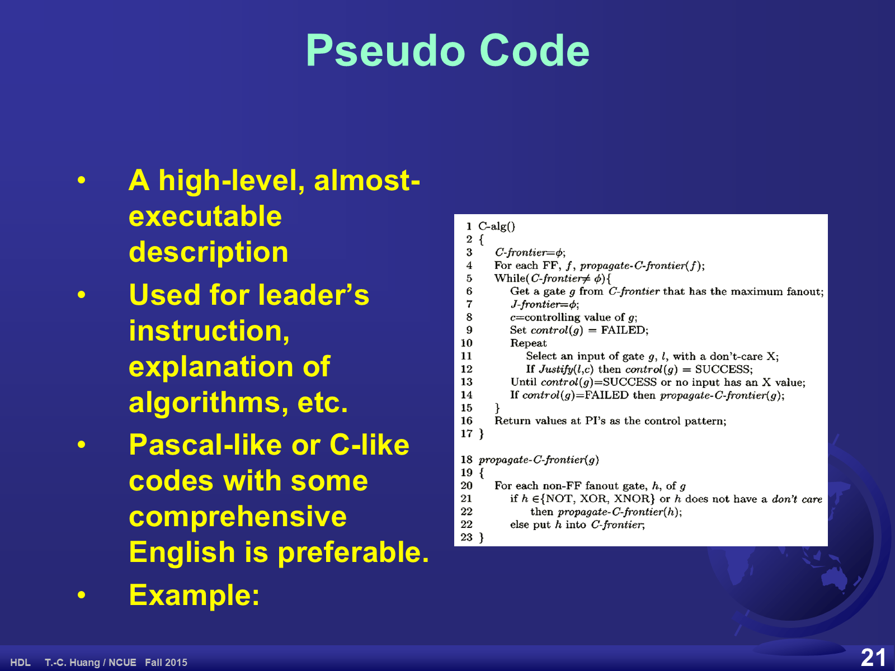
4.17 步驟 2：流程圖元件與控制結構
投影片 p.22–26
基本元件（p.22）
投影片列出的六類元件照錄：Flow and Direction、Decision、Process、Terminals、(Card) Input、Specific Outputs（含打孔帶 tapeout、報表 report、顯示 display）。
if-then-else（p.23）
投影片把語法與圖形並排：if (〔菱形 C〕) { 〔方塊 Y〕 } else { 〔方塊 N〕 }。流程是：進入菱形 Condition，Y 由右頂點出去進入 Y 方塊，N 由下頂點出去進入 N 方塊，兩條路徑最後匯合成一條往下。
switch（p.24）
多路判斷畫成一個半圓扇形符號，標 c，上方一個進入箭頭，下方五個出去箭頭標 1、2、3、…、N。投影片用兩段 C 程式對照：
if (expr==const1) {P1}
else if (expr==const2) {P2}
else if (expr==const3) {P3}
else if (expr==const4) {P4}
else {Pdefault}switch (expr) {
case const1: {P1} break;
case const2: {P2} break;
case const3: {P3} break;
case cosnt4: {P4} break;
...
default: {Pdefault}
}原文把 const4 誤寫成 cosnt4。照原樣保留。
for 迴圈（p.25）
語法與圖形：for (〔綠框 I 初始化〕;〔菱形 C 條件〕;〔黃框 N 遞增〕) {〔白框 P 處理〕}。流程是：Initialization → Condition；Y 往右進入 Process → Next → 繞回 Condition 之前；N 往下離開迴圈。
for(i=1;i<=9;i++) {
for(j=1;j<=9;j++)
printf(“%dX%d=%2d\t”,i,j,i*j);
printf(“\n”);
}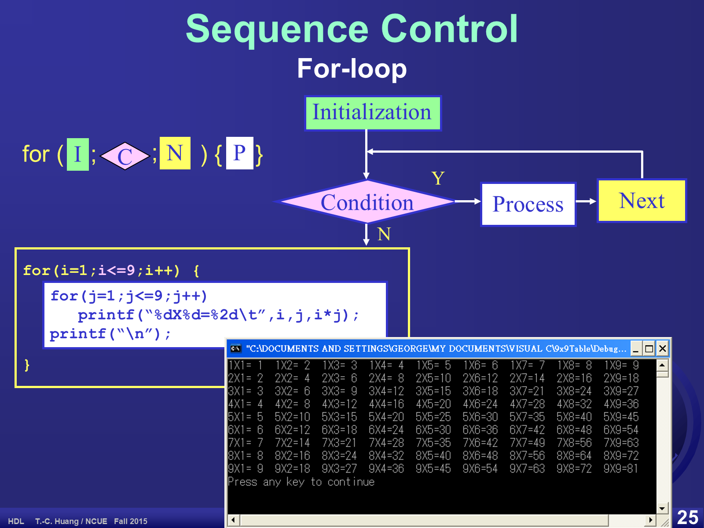
do-while 與 while-do（p.26）
| 結構 | 語法 | 流程 | 本體執行次數 |
|---|---|---|---|
| do-while | do {P} while(C} ; | 先進 Process，再判斷 Condition；Y 繞回 Process 之前，N 離開 | 至少一次 |
| while-do | while (C) {P} ; | 先判斷 Condition；Y 進 Process 再繞回判斷之前，N 離開 | 可能零次 |
p.26 的 do-while 語法在投影片上寫成 } while( C } ;，右括號誤打成大括號。照原樣記錄。
4.18 步驟 3：流程圖對應到 ASM 圖的三條規則
投影片 p.27–29
規則 1：把處理切成「一個時脈做得完」的狀態（p.27）
- Split Processes in flowchart into States that each state can be executed in 1 clock cycle.（把流程圖的處理切成狀態，每個狀態都能在一個時脈週期內完成。）
- Note that a WR-dependent process should be split into two states.（寫後讀相依的處理必須拆成兩個狀態。）
情況 A：先寫後讀（有相依，必須拆）
a = b + c;
x = a * d;State1: a = b + c;
State2: x = a * d;第二行要用到第一行剛算出來的 a，一個時脈內做不完，所以必須拆。
情況 B：先讀後寫（無相依，可留在同一狀態）
x = a + d;
a = b * c;State1: x = a + d;
a = b * c;兩行用的都是 a 的舊值，可以同時進行（正好對應非阻塞指定的語意）。
規則 2：單一位元的判斷直接變成解多工器（p.28）
- If the condition is a 1-bit variable, directly map the decision to a demultiplexer that is a combinational gate (i.e., it takes a delay less than the clock cycle).（若條件就是一個 1 位元變數，判斷可直接對應成解多工器 — 它是組合閘，延遲小於一個時脈週期。）
- The clock state of a decision is belong to the last process, therefore the last process should be split into 2 states if there is a WR-dependency.（判斷的時脈狀態歸屬於前一個處理；因此若有寫後讀相依，前一個處理必須拆成兩個狀態。）
轉換後，菱形的兩條分支標籤從 Y／N 改成解多工器的選擇值 1／0。
如果判斷讀的正是同一週期剛寫的值（例如 C = A & B; 緊接著判斷 C），就要插入一個 (Dummy) 空狀態，讓那個指定有完整一個時脈可以穩定下來。
規則 3：運算式的判斷對應成菱形（解多工器 + 額外處理）（p.29）
- If the condition is an expression instead of a direct input, map the decision to a a diamond.（若條件是運算式而不是直接的輸入，判斷對應成一個菱形。）
- A diamond is composed of a demultiplexer and an extra process.（一個菱形由一個解多工器加一個額外處理組成。）
- When the dealy of combinational circuit f( ) is too large, it is better to split it to two states with a demultiplexer.（當組合電路 f( ) 的延遲太大時，最好用解多工器把它拆成兩個狀態。）
原文 a a diamond 重複冠詞、dealy 應為 delay。照原文保留。
硬體上：一個梯形組合區塊 f( ) 算出 C，C 再去驅動解多工器的選擇端，兩條輸出腳標 0 與 1。若 f( ) 太慢，就改成「C = f( ); → (Dummy) → 判斷 C」三個狀態。
三條規則可以濃縮成一句：ASM 圖的每個方塊都必須是「一個時脈週期做得完」的工作，而判斷不佔自己的週期，它寄生在前一個狀態的尾端。只要這兩件事成立，剩下的就是機械式地對應成硬體。
4.19 範例：8 位元乘法器的資料路徑與流程圖
投影片 p.30–31
資料路徑的規劃（p.30）
投影片把資料路徑畫成一個大的倒梯形（ALU 符號），上方兩個輸入 X（被乘數）與 Y（乘數），左側進來 Rst 與 Clk，底部輸出乘積。梯形內部有：
- 一個小綠框
N：迭代次數計數器。 - 一條黃色暫存器長條，切成三段
C（1 位元）、A（8 位元）、B（8 位元） — 也就是{C,A,B}這個 17 位元的移位暫存器。
這是位移相加 (shift-and-add) 乘法器的經典配置：B 一開始放乘數 Y，每次檢查 B[0] 決定要不要把 X 加到 A，然後整個 {C,A,B} 右移一位 — 乘數被逐位移出去，乘積則從高位往低位累積進來，最後答案就在 {A,B}。只要一個加法器就能做乘法，代價是要花 N 個時脈。
流程圖（p.31）
注意兩條回路：B[0] 的 No 從右頂點出去、繞過累加方塊；N=0 的 No 從左頂點出去、繞回 B[0] 判斷之前（圖中橘色那條）。N 是 3 位元，加到 8 次會自然歸零，所以 N=0 就是「做完 8 次」的條件。
執行軌跡（p.31 右半）
投影片右半是一張逐時脈的軌跡表，範例為 X=151、Y=165。表格欄位由左至右是 N（3 格，黑）、C（1 格，黃）、A（8 格，綠）、B（8 格，粉），右緣標出該列是哪個動作產生的：+（累加 A+X）或 →（右移）。第一列是初始狀態 N=000、C=0、A=00000000、B=10100101，之後十八列交替進行累加與移位，直到 N 歸零。最後一列的 {A,B} 被大括號框起並標註 P=151X165=24915。
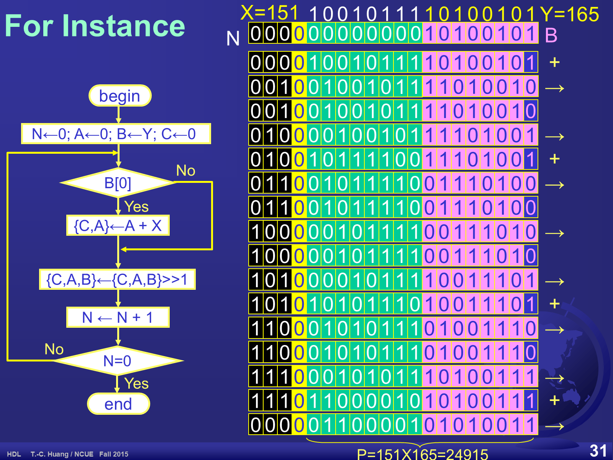
軌跡表的逐格位元值只能由投影片畫面判讀，無法從投影片的 XML 可靠取得，因此本網站沿用原始算繪圖而不重製表格。
4.20 用 C 與組合語言驗證演算法
投影片 p.32–33
在畫 ASM 圖、寫 Verilog 之前，先用 C 把演算法跑過一遍 — 這支 C 程式就是 §4.19 流程圖的可執行版本，而且窮舉全部 216 組輸入與 X*Y 比對。
#include <stdio.h>
main()
{
unsigned char X, Y, C, A, B, N, Verified;
int i, P, Q, Acc, S;
Verified = 1;
for(i=0;i<(1<<16);i++){
X=i/(1<<8);
Y=i%(1<<8);
P=X*Y; // Golden Circuit
// Algorithm Started Here
N=0; A=0; B=Y; C=0; // Initialization
do {
// Accumulate
if(B%2) {Acc = A + C*256 + X; A=Acc%256; C=(Acc>>8)%2;}
// Shift CAB
S = C*65536 + A*256 + B; S = S >> 1; B=S%256; A=(S>>8)%256; C=(S>>16)%2;
N++;
} while(N!=8);
Q=(A<<8)+B;
if(Q!=P) {
Verified=0;
printf("Error when X=%d, Y=%d, Q=%d\n", X, Y, Q);
break;
}
}
if(Verified) printf("The circuit is exhaustively functionally verified.\n");
}注意 P=X*Y; 那行的註解是 // Golden Circuit — 用語言內建的乘法當作「黃金標準」，再和自己寫的演算法比對。這和第 01 章 Lab01 的 Formal Verification by Golden Test 是同一個手法。
BEGIN: MOV N, #States
CLR A
CLR C
MOV B, X
LOOP: JE SHIFT
ADC Y
SHIFT: SHR CAB
DEC N
JNZ LOOP
END 投影片的結語照錄：C and Assembly codes can be the fast logic simulator. （C 與組合語言可以當作快速的邏輯模擬器。）
十行組合語言就是整個演算法：載入次數、清空 A 與 C、放入乘數，然後迴圈「判斷最低位 → 需要就累加 → 右移 → 次數減一 → 沒歸零就繼續」。拿它和 §4.19 的流程圖對照，會發現一行組語大致對應一個流程圖方塊。
4.21 流程圖 → ASM 圖對照
投影片 p.34
這一頁是步驟 3 的成果：左邊是 §4.19 的流程圖，右邊是套用 §4.18 三條規則後得到的 ASM Chart。
四個差異就是三條規則的結果
| # | 差異 | 為什麼 |
|---|---|---|
| a | 初始化之後插入一個 dummy 狀態 | 讓 B[0] 的判斷看到的是已經穩定的值（規則 2） |
| b | {C,A,B}>>1 與 N←N+1 合併成一個 Shift 狀態 | 兩者沒有寫後讀相依，可以同一個時脈完成（規則 1 的情況 B） |
| c | N=0 判斷之前插入 Dummy2 | 同 a：N 剛在 Shift 被寫，判斷要等它穩定 |
| d | 分支標籤由 Yes／No 改為 1／0 | 它們現在是解多工器的選擇值（規則 2） |
最後 ASM 圖共有 5 個會佔時脈的狀態：Initial、dummy、Accumulate、Shift、Dummy2（外加 begin 與 end）。這個數字直接決定了 §4.23 定序器要用幾個正反器。
4.22 步驟 4：ASM 元件對應到硬體
投影片 p.35
這一頁是一本「對應字典」：ASM 圖的每一種符號，對應到一種固定的硬體。學會這六條，剩下的工作就是機械式的翻譯。
| # | ASM 元件 | 對應硬體 |
|---|---|---|
| 1 | ( begin ) 終端 | 一個帶 PRE（預設）的 D 型正反器，其 Q 經由接地／常數 0 繞回輸入 — 重置後由它啟動整條鏈 |
| 2 | State 處理方塊 | 一個帶 CLR（清除）的 D 型正反器；Q 往下接到下一格，同時以虛線往右扇出成該狀態的控制訊號。一個狀態 = 一個正反器 |
| 3 | 判斷菱形（條件 C 為 1 位元） | 一個解多工器：狀態符記由上方進入，C 接選擇端，兩條輸出腳標 0 與 1 |
| 4 | 判斷菱形（內含 f( )） | 一個組合區塊 f( ) 梯形，其輸出 C 去驅動同樣的 0／1 解多工器 |
| 5 | 匯合點（兩條箭頭合流） | 一個 OR 閘 |
| 6 | ( end ) 終端 | 一個 OR 閘接一個 D 型正反器，Q 再繞回 OR 的輸入 — 形成會自我保持的 done／Ready 旗標 |
關鍵在第 2 條：一熱碼 (one-hot) 編碼。有 5 個狀態就用 5 個正反器，任何時刻只有一個是 1，狀態符記像接力棒一樣沿著鏈往下傳。好處是狀態訊號直接就是控制訊號、不需要解碼器；代價是正反器數量等於狀態數（而不是 log₂）。
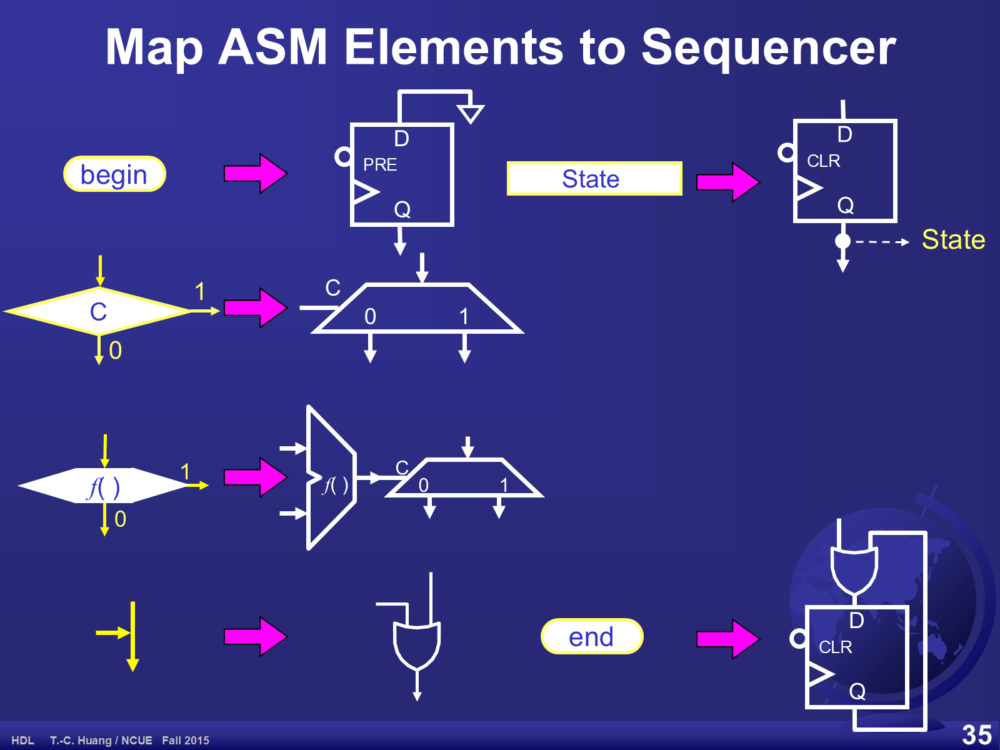
4.23 對應到狀態定序器
投影片 p.36
把 §4.22 的字典套到 §4.21 的 ASM 圖上，就得到一熱碼狀態定序器（控制路徑）。投影片左邊再放一次 ASM 圖，右邊是由上而下的正反器鏈：
| # | 元件 | 對應的 ASM 元素／輸出 |
|---|---|---|
| 1 | DFF（帶 PRE） | begin，由接地三角形繞過上方餵入 |
| 2 | DFF（帶 CLR） | Initial 狀態 → 控制訊號 Initial |
| 3 | DFF（帶 CLR） | 第一個 dummy 狀態 |
| 4 | OR 閘 | 匯合：dummy 的輸出與鏈尾的回路 |
| 5 | 解多工器 0｜1 | 由 B[0] 選擇 |
| 6 | DFF（帶 CLR） | Accumulate 狀態 → 控制訊號 Accumulate（0 腳直接繞過它） |
| 7 | OR 閘 | 匯合：Accumulate 的輸出與繞過的路徑 |
| 8 | DFF（帶 CLR） | Shift 狀態 → 控制訊號 Shift |
| 9 | DFF（帶 CLR） | 第二個 dummy 狀態 |
| 10 | 解多工器 0｜1 | 由 N=0 選擇；0 腳沿左側繞回第 4 項的 OR 閘 |
| 11 | OR 閘 + DFF（帶 CLR） | end／Ready 的自我保持格 |
所有正反器共用 Clk 與一個低態有效的清除訊號。三條控制訊號 Initial、Accumulate、Shift 就是要送給資料路徑的指令。
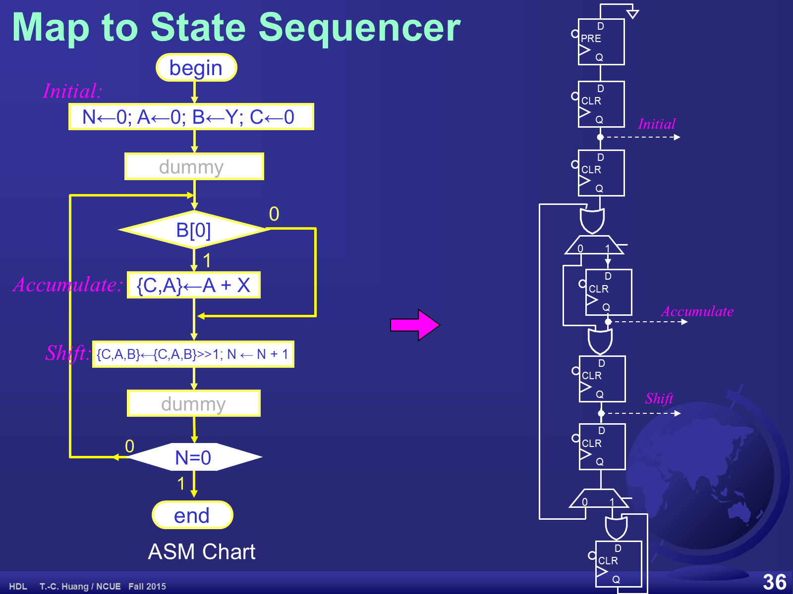
4.24 對應到 ALU / 資料路徑
投影片 p.37
控制路徑做完，換資料路徑。做法是：每個「會寫入某個暫存器」的狀態，就在那個暫存器前面疊一個多工器 — 這就是 §4.15 警告的「multiplexer stack」。
上半：{C,A,B} 暫存器檔
- 最上方是 §4.14 的右移平行四邊形符號，輸入
{C,A,B}、輸出移位後的值。 - 一個標
+的梯形加法器計算A + X。 - 底部三個暫存器
C（1 位元）、A、B，每個前面都疊著三個 2 對 1 多工器，由上而下分別由Shift、Accumulate、Initial控制。
| 控制訊號 | C | A | B |
|---|---|---|---|
Shift | 移位後的值 | 移位後的值 | 移位後的值 |
Accumulate | 加法器的進位輸出 | 加法器的和 | 保持不變 |
Initial | 常數 0 | 常數 0 | Y |
沒有任何控制訊號有效時，多工器選的是暫存器自己的輸出 — 也就是「保持」。圖上那些繞到區塊外側再回來的線就是這些保持路徑。
下半：N 計數器
一個 + 梯形加法器，一邊輸入常數 1、一邊輸入 N 的輸出，結果送進一個兩層多工器堆疊（由 Shift 選遞增、由 Initial 選載入 0），再寫回暫存器 N，N 的輸出又繞回加法器。
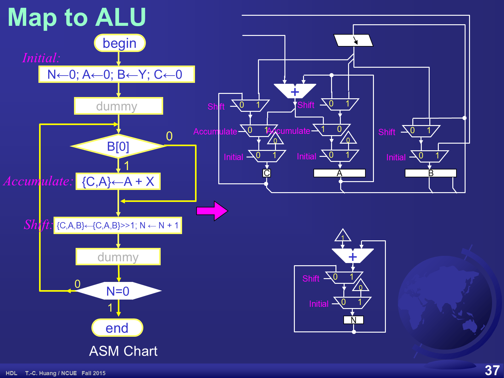
為什麼 ASM 法面積大？因為每個暫存器前的多工器數量等於會寫它的狀態數。狀態一多，多工器就疊得又高又慢，訊號要穿過一整疊多工器才進得了暫存器 — 這正是 §4.15 說的「high area overhead and low performance」。§4.27 的計數器型 FSM 就是為了改善這一點。
4.25 完整設計：控制器 + 資料路徑
投影片 p.38
這一頁把 §4.23 的定序器與 §4.24 的資料路徑合成一張完整電路圖。投影片本身沒有標題文字，只有左緣一個旋轉的大字 Control。
| 區塊 | 內容 |
|---|---|
| 左：Control | 與 §4.23 完全相同的一熱碼正反器鏈。Rst 與 Clk 從左下進入，以黃色虛線軌接到每個正反器的清除與時脈腳。 |
| 中：控制／狀態訊號 | 往右：Initial、Accumulate、Shift 送進資料路徑的多工器堆疊。往左： B[0]（從暫存器 B 取出）送進第一個解多工器的選擇端；N=0 的比較結果送進第二個。 |
| 右：Datapath | 輸入 Y 與 X 從左上進入；右移平行四邊形、+ 加法器、三個多工器堆疊暫存器 C／A／B；乘積匯流排 P 由 {A,B} 往右輸出。右下是 N 計數器與一個標 = 的比較器（輸入為 N 與常數 0），輸出就是回饋給控制器的 N=0。最右邊一條粗白虛線箭頭標 Ready，由最後一個控制正反器驅動。 |
這就是 ASM 設計法的標準成品形狀：左控制、右資料，中間雙向互通。控制器送命令過去，資料路徑把狀態旗標 (B[0]、N=0) 送回來決定下一步。
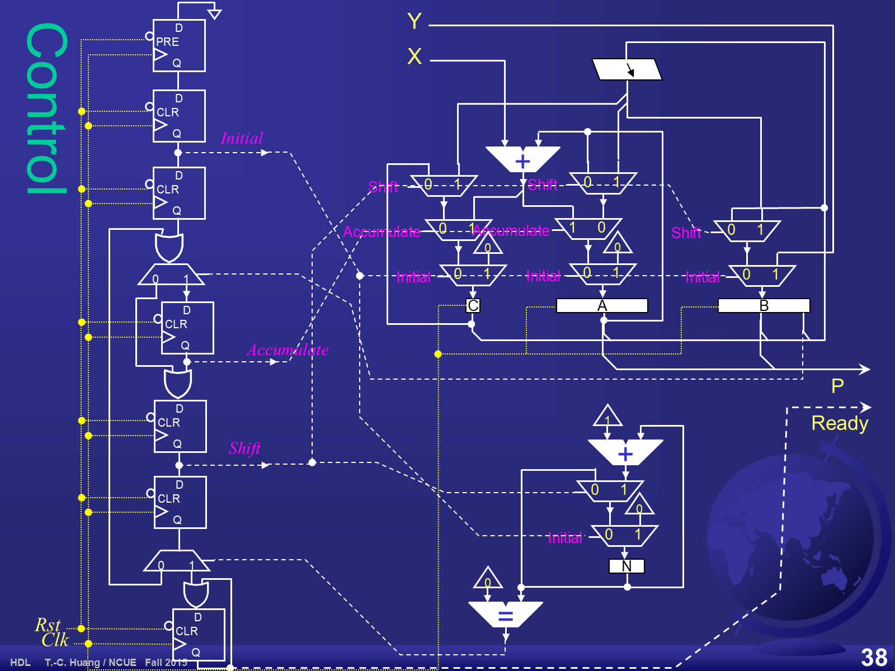
4.26 回到程式碼：定序器的閘級模型
投影片 p.39
標題 Remapped to Coding / Gate-Level Model for Sequencer。既然 §4.23 的定序器是一條固定的鏈，就可以直接用閘級元件把它寫出來 — 這是 §4.21 的 ASM 圖的文字版。
module Sequencer(Rst, Clk, B, E, Initial, Accumulate, Shift, Ready);
input Rst, Clk, B, E;
output Initial, Accumulate, Shift, Ready;
DFFp (Clk, Rst, 0, Q1)
DFFc (Clk, Rst, Q1, Initial);
DFFc (Clk, Rst, initial, Q2);
or (A, Q2, E0);
mux (B, A, B1, B0);
DFFc (Clk, Rst, B1, Accumulate);
or (Q3, B0, Accumulate)
DFFc (Clk, Rst, Q3, Shift);
DFFc (Clk, Rst, Shift, Q4);
mux (E, Q4, E1, E0);
or (Q5, Ready, E1);
DFFc (Clk, Rst, Q5, Ready);
endmodule對照表：B 就是 B[0]，E 就是 N=0。一行一行讀下來，正好是 §4.23 表格的 11 個元件。
三處原文瑕疵：DFFp (…Q1) 與 or (Q3, B0, Accumulate) 兩行少了分號；第三行的 initial 用了小寫（與 Verilog 關鍵字衝突），應為輸出埠 Initial。照原文保留。
4.27 以計數器為基礎的狀態圖與 FSM 編碼
投影片 p.40–42
精簡後的狀態圖（p.40）
標題 Minimized Counter-Based State Diagram。把 §4.21 的五個狀態精簡掉 dummy，只留四個節點，並用計數器 N 取代部分狀態：
投影片把兩個圓圈都標成 Init。由 p.41 的狀態常數列表 Init, Acc, Shift, Ready 判斷，左下那個幾乎確定應該是 Ready（結束狀態）。照原文保留並標示。另外 PowerOn or SysRst 的文字框超出投影片左緣，畫面上被裁成 owerOn or SysRst。
兩個狀態週期的寫法（p.41）
module MUL(Rst, Clk, X, Y, P, Ready);
Parameter n=3;
input Rst, Clk;
input [2^n-1:0] X, Y;
output [2*2^n-1:0] P;
output Ready;
reg [n-1:0] N
reg C;
reg [2*2^n-1:0] P;
reg [1:0] State;
parameter Init=2’b00, Acc=2’b01, Shift=2’b10, Ready=2’b11;
always@(posedge Clk)
if(Rst) begin N=0; State=Acc; C=0; P=Y; end
else case(State)
Acc: P=P+X;
Shift: begin
N=N+1; P={C, P[15:1]}; C=0;
State=N?Acc:Ready;
end
Ready: State=Ready;
endcase
endmodule多處原文瑕疵：Parameter 首字母大寫；reg [n-1:0] N 少分號；Ready 同時當輸出埠與狀態常數（名稱衝突）；常數用全形引號 2’b00。照原文保留。
一個狀態週期的寫法（p.42）
module MUL(Rst, Clk, X, Y, P, Ready);
input Clk, Rst;
output Ready;
input [7:0] A, B;
output [15:0] P;
reg [15:0] P;
reg [2:0] N;
reg Ready;
wire [8:0] S;
wire [16:0] Q;;
assign S = P[0]?(P[15:8]+A):P[15:8];
assign Q = {S, P[7:0]};
always@(posedge Clk)
if(Rst) begin N=0; P[15:8]=0; P[7:0]=B; Ready=0; end else if(!Ready) begin
P = Q >> 1;
if(N==7) Ready = 1; else N = N + 1; end
endmodule原文瑕疵：埠列宣告 X, Y 但本體用的是 A, B；wire [16:0] Q;; 有兩個分號。照原文保留。
關鍵改良：把「累加」寫成連續指定 assign S = P[0]?(P[15:8]+A):P[15:8]; — 累加變成組合邏輯，不再佔用一個狀態。於是每個時脈同時完成累加與移位，8 個時脈就做完，而不是 16 個。
| 寫法 | 每位元花幾個時脈 | 8 位元總共 |
|---|---|---|
| ASM 一熱碼（§4.21，含 dummy） | 最多 | 遠多於 16 |
| 2-State-Cycle（p.41） | 2（Acc + Shift） | 16 |
| 1-State-Cycle（p.42） | 1（累加改為組合邏輯） | 8 |
4.28 面積與時間的取捨
投影片 p.43
標題 N-Bit Multiplier，副標就一行程式：assign P = A * B;
原文把 Combinational 拼成 Combinatinal。照原文保留。
這張圖是全章的收束：同一行 assign P = A * B;，可以被合成到這條曲線上的任何一點。要快就給面積（§4.6 的平行陣列），要省面積就給時間（§4.27 的循序乘法器），中間還有部分平行的折衷。選哪一點，是設計者的決定，不是語言的決定。
4.29 範例：最大公因數 GCD
投影片 p.44–46
這是四步流程的第二個練習題。投影片的開場是兩句話：Actually you have known the algorithm!（其實你早就會這個演算法了！）So, just catch the regularities from observation.（所以只要從觀察中抓出規律。）
從觀察找規律（p.44）
gcd( 91, 35 ) = 7
70
= gcd( 21, 35 ) ⎫
= gcd( 35, 21 ) ⎭
21
= gcd( 14, 21 ) ⎫
= gcd( 21, 14 ) ⎭
14
= gcd( 7, 14 ) ⎫
= gcd( 14, 7 ) ⎭
14
0綠色的數字是每一步被減掉的倍數（70 = 2×35、21、14、14），最後的 0 是餘數。大括號標出的是交換的動作 — 讓較大的數永遠排在前面。
寫成 C 函式（p.45）
投影片的引導句：Then you can write a function in C.
unsigned int GCD(unsigned int A, insigned int B)
{
unsigned int C;
if(A<B) SWAP(A, B);
while(B>0) {
C = A % B;
A = B;
B = C;
}
return(A);
}
void SWAP(unsigned int A, unsigned int B)
{
unsigned int C;
C = A;
A = B;
B = C;
}兩處原文問題：insigned int B 應為 unsigned；SWAP 以傳值方式接收參數，在 C 裡不會真的交換呼叫端的變數（需要傳指標或參考）。照原文保留。
投影片在旁邊加了四個註記：Can be implemented in 1 cycle in hardware!（硬體上可以一個週期做完！）、/ % can be simulated in ModelSim (V2K).（除法與取模在 ModelSim V2K 可以模擬）、Need not be implemented in some synthesizers.（某些合成器不支援實作）。
這三個註記點出同一個陷阱：% 在模擬時沒問題，但合成器未必做得出來（參見第 03 章 §3.5 的不可合成運算子）。真要做硬體，A % B 得自己用連續減法或除法器實作 — 這就是為什麼 p.46 的狀態機要有一個 Mod 狀態。
直接改寫成 Verilog（p.46）
module GCD(Clk, Rst, A, B, D, Ready);
input Clk, Rst;
input [31:0] A, B;
output [31:0] D;
output Ready;
parameter Init=0, Mod=1, Out=2;
reg [1:0] PS, NS;
always@(posedge Clk)
if(Rst) begin NS=Init; PS=Init; Ready=0; end
else begin PS = NS;
wire [31:0] X, Y;
always@* case(PS)
Init: begin
X = (A<B) ? B : A; Y = (A<B) ? A : B; NS = Mod;
end
Mod: begin X <= Y; Y <= X % Y; NS = Y ? Mod : Out; end
Out: begin D = X; NS = Out; Ready=1; end
endcase
endmodule這段程式無法編譯：else begin PS = NS; 的 begin 從未關閉；X／Y 宣告為 wire 卻在程序式區塊中被指定；wire 宣告夾在兩個 always 之間。照原文保留，教學時請當成「草稿」而非正解。
不過結構是對的，值得學：PS／NS（現態／次態）兩個暫存器、三個狀態 Init（排序大小）→ Mod（反覆取模與交換）→ Out（輸出並拉起 Ready），正是第 05 章會正式介紹的標準 FSM 寫法。
4.30 範例：氣泡排序器
投影片 p.47–48
第三個練習題，也是最完整的一個：排序器需要和記憶體互動，所以多了位址與讀寫控制。
int Sort(int M[], N)
{
int a, n;
for(n=N-1;n>0;n--)
for(a=0;a<n;a++)
Swap(M[a], M[a+1]);
return(0);
}Module M(Clk, WE, A, D);
inout [31:0] D;
input [11:0] A;
input Clk, WE;
reg [31:0] M [0:4095];
always@(posedge Clk)
if(WE) M[A]=D;
else D=M[A];
endmodule原文 Module 首字母大寫；投影片 XML 中 posedge Clk 的空白遺失（顯示為 posedgeClk），上面照畫面呈現。
方塊圖是兩個方塊 Sorter 與 M 共用 Clk，中間有位址線 A（Sorter → M）、雙向資料線 D，以及寫入致能 WE；左側 Start 進入 Sorter、Ready 離開。
六個狀態的狀態圖（p.47 右）
| 狀態 | 內容 | 去向 |
|---|---|---|
Init | N=4095 | → Go |
Go | A=0 WE=0 | → R |
R | B=D A=A+1 WE=0 | → C |
C（比較） | B<D：B=D; A=A+1; WE=0; If(A=N-1) N=N-1B>=D：A=A-1; WE=1; | B<D 時自迴圈；否則 → W；或 → Ok |
W（寫入） | D=B; A=A+1; WE=1 If(A=N-1) N=N-1 | → Go（弧線標 N=0）；或 → Ok |
Ok | Ready=1 | 終止狀態 |
讀法：C 是比較狀態 — 只要 B<D（順序正確）就停在原狀態繼續往前串，不需要交換；一旦 B>=D 就把位址退一格、拉起 WE 進入寫入狀態 W，寫完回到 Go 開始新的一輪。N=0 代表所有輪次跑完，轉去 Ok。
module Sorter(Clk, Init, WE, A, D, Ready);
input Clk, Init;
inout [31:0] D;
output WE, Ready;
output [11:0] A;
reg [2:0] S;
parameter Ok=0, Go=1, R=2, C=3, W=4;
reg [11:0] A;
reg [31:0] B, D;
reg [11:0] N;
reg Ok;
always@(posedge Clk)
if(Init) begin N=4095; S=Go; end
else case(S)
Go: begin A=0; WE=0; S=R1; end
R: begin B=D; A=A+1; S=C; end
C: if(B>D) begin A=A-1; WE=1; S=W; end
else begin B=D; A=A+1; WE=0;
if(A>=N-1) if(N>1) begin N=N-1; S=C; end
else S=Ok;
else S=Go;
end
W: begin D=B; A=A+1; WE=1;
if(A>=N-1) begin if(N>1) begin N=N-1; S=Go; end
else S=Ok;
end
end
Ok: Ready=1;
endcase
endmodule四處原文瑕疵：S=R1; 的狀態 R1 從未宣告（應為 R）；reg Ok; 與 parameter Ok=0 名稱衝突；巢狀 if 後面那個 else S=Go; 懸空；endcase 的縮排跑到區塊外。照原文保留。
4.31 範例：質數表
投影片 p.49
void prime()
{
unsigned int M[100], N=0, i, j, yes;
M[N++]=2;
for(i=3; i<9999; i+=2) {
j=0;
yes=1;
while(M[j]*M[j]<i) if(i%M[j++]) {yes=0; break;}
if(yes) M[N++]=i;
}
}這段的判斷邏輯與一般寫法相反：if(i%M[j++]) 為真代表不能整除，照理應該繼續試下一個質數，但程式卻在這裡設 yes=0; break;（判定為非質數）。依此邏輯結果會是錯的，正確的條件應為 if(i%M[j++]==0)。照原文保留。
其餘結構是標準的試除法：只存質數到 M[]、只試奇數、試除上限為 M[j]*M[j] < i（等價於試到 √i）。這是 §4.32 練習第 1 題的 C 版本。
4.32 練習與再思考
投影片 p.50
投影片列出十題（Exercises and Rethinks），括號裡的反問是重點：
- List prime numbers < 9999.
- Calculate the area of a triangle with edges A, B, and C.
- Quick Sort in Hardware. (How about parallel sorter?)
- Sequentially Fourier transform. (How about FFT?)
- Memory Controller (Why not SW?)
- Traffic Light Controller (Why not HW?)
- Elevator Controller (Why not HW?)
- FIR/IIR Filters (Why not FSM? Datapath)
- PLC (programmable logic controller) (Why not HW?)
- JTAG TAPC (test access port controller) (Why not SW?)
這些反問全部指向第 01 章 §1.2 的「軟硬共設計」：記憶體控制器與 JTAG TAPC 必須是硬體（速度與獨立性要求），而紅綠燈、電梯、PLC 其實用軟體（微控制器）更划算。會寫 Verilog 之後，更重要的判斷是「這件事該不該做成硬體」。JTAG TAPC 正是第 05 章的主要範例。
4.33 Lab04 計數器
投影片 p.51
Binary Counters with/without properties（有／無下列性質的二進位計數器）：
- Loadable: data, LOAD-control（可載入）
- Resettable: Rst-control（可重置）
- Up/Down Counting（上數／下數）
- Stride/Step/Increment（步進量）
- Start/End（起始／結束值）
- Recount/Stop at end（到終點後重數或停止）
- Synchronous/Asynchronous for each control（每個控制訊號可同步或非同步）
- Johnson, Ring Counters, LFSR Counters（強生、環形、線性反饋移位暫存器計數器）
- Snake（貪食蛇）
Problem 1. Complete all the combinations in this lab.（把這個實驗所有的組合都做完。）
最後三種計數器會在第 05 章 §5 再次出現：環形計數器就是一熱碼（和 §4.23 的定序器同一個原理）、強生計數器是環形的變形、LFSR 則用來產生偽隨機序列。
重點整理
- 同一行
assign P = A * B;可以合成到面積／時間曲線上的任何一點：平行陣列快但面積 O(N²)，循序乘法器省面積但要 N 個時脈。選哪一點是設計者的決定。 - 乘法就是「部分積相加」：每一列部分積要嘛是被乘數本身、要嘛是全零，所以一個 AND 閘就夠；陣列中第 0 列只有 AND 閘，沒有加法器。
for在三個地方意思完全不同：initial內是模擬時間的迴圈、generate內是編譯時的空間複製（索引須為genvar）、always內是一個時脈內的並行展開。- V2K 的
generate取代了「寫 C 程式產生 Verilog」：§4.7 的 36 行手工列表，在 §4.11 變成六行雙層迴圈，而且位寬可參數化。 - ASM 的四步流程：虛擬碼 → 流程圖 → ASM 圖 → HDL／電路。
- 流程圖轉 ASM 圖的核心規則：每個狀態都要能在一個時脈內做完；寫後讀 (WR) 相依必須拆成兩個狀態；先讀後寫則可以留在同一個狀態。
- 判斷不佔自己的時脈，它寄生在前一個狀態的尾端；若判斷要讀同一週期剛寫的值，就得插入
dummy空狀態讓它穩定。 - ASM 元件到硬體有固定的對應字典：狀態 → 一個 D 型正反器（一熱碼）、判斷 → 解多工器、匯合 → OR 閘、
end→ 自我保持的 Ready 格。 - 成品形狀永遠是「左控制、右資料」：控制器送出
Initial／Accumulate／Shift，資料路徑回傳B[0]／N=0等狀態旗標。 - ASM 法的代價是多工器堆疊：每個暫存器前的多工器數量等於會寫它的狀態數，所以面積大、速度慢 — 投影片自己就寫明了。
- 改良方向是把工作搬進組合邏輯：p.42 把累加改成
assign，於是每個時脈同時完成累加與移位，8 位元乘法由 16 個時脈降到 8 個。 - 先用 C 驗證再寫 HDL：用語言內建運算當「黃金標準」窮舉比對，C 與組合語言就是最快的邏輯模擬器。
關鍵術語
- 演算法狀態機 ASM, Algorithmic State Machine
- 由流程圖對應而來的一種 FSM 設計風格，可手工合成。投影片 p.20
- ASM 圖 ASM chart
- 每個方塊都能在一個時脈內完成、分支標為選擇值 0／1 的流程圖。投影片 p.34
- 寫後讀相依 WR dependency
- 後一行要用到前一行剛寫入的值，必須拆成兩個狀態。投影片 p.27
- 空狀態 dummy state
- 不做任何事、只為了讓剛寫入的值有一個完整時脈穩定下來的狀態。投影片 p.28
- 一熱碼定序器 one-hot sequencer
- 一個狀態配一個正反器、任何時刻只有一個為 1 的控制鏈；狀態輸出直接就是控制訊號。投影片 p.35
- 資料路徑 datapath
- 負責實際運算與儲存的部分，由控制器下達的控制訊號驅動。投影片 p.37
- 多工器堆疊 multiplexer stack
- 每個暫存器前依「會寫它的狀態數」疊起的多工器，是 ASM 法面積大、速度慢的主因。投影片 p.37
- 位移相加乘法器 shift-and-add multiplier
- 用一個加法器與一組移位暫存器，花 N 個時脈完成乘法。投影片 p.30
- 桶式移位器 barrel / constant shifter
- 用 log₂N 排多工器（位移 1、2、4…）組出任意位移量的組合電路。投影片 p.19
- 迭代邏輯陣列 ILA, Iterative Logic Array
- 把 FSM 完全展開成純組合電路的結果，等於零週期的 FSM。投影片 p.5
- genvar
generate迴圈專用的索引變數型別，在編譯時展開而非執行時。投影片 p.14- 黃金標準測試 golden test
- 用已知正確的參考模型（例如語言內建的
*）窮舉比對待測設計。投影片 p.32
完整詞條見全站術語表。